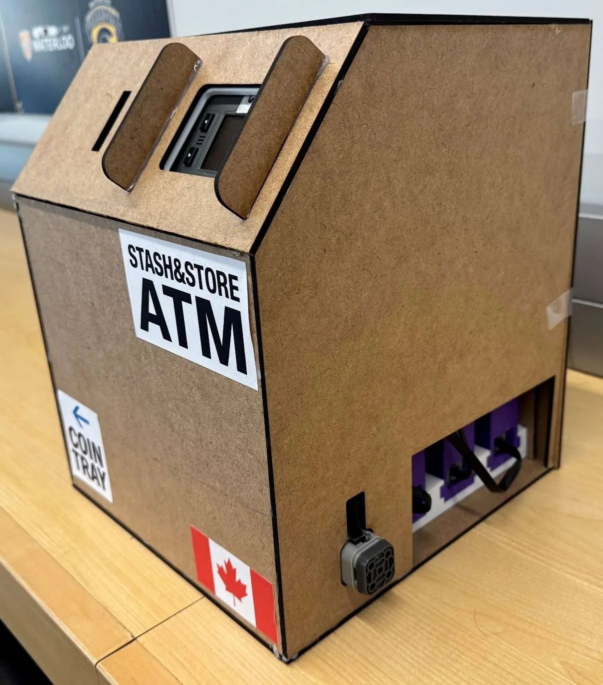
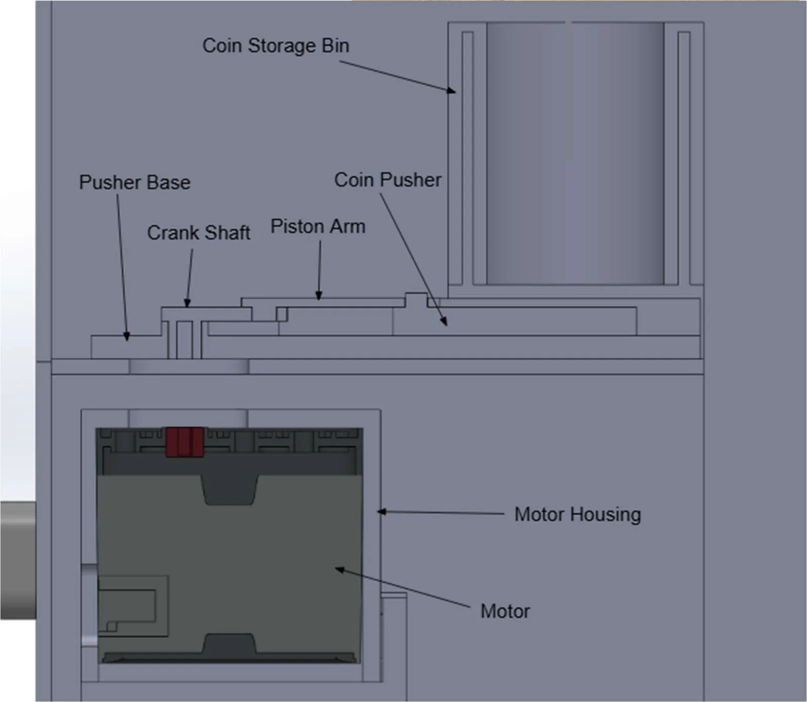
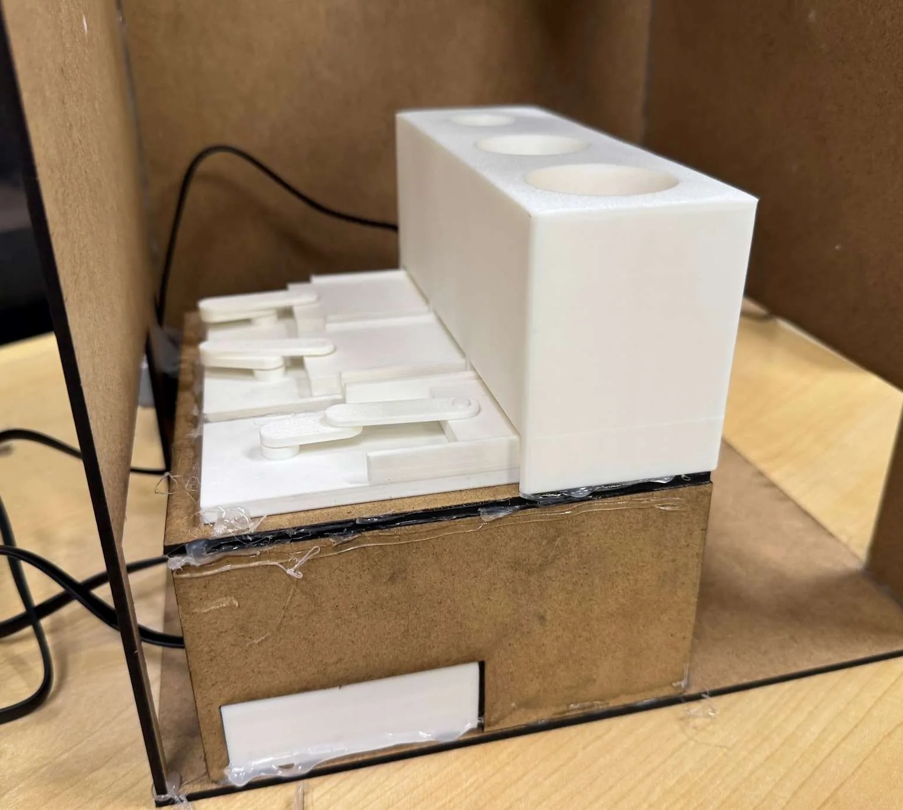
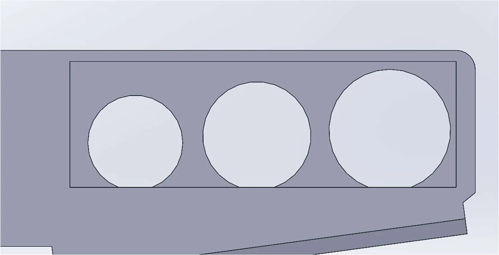
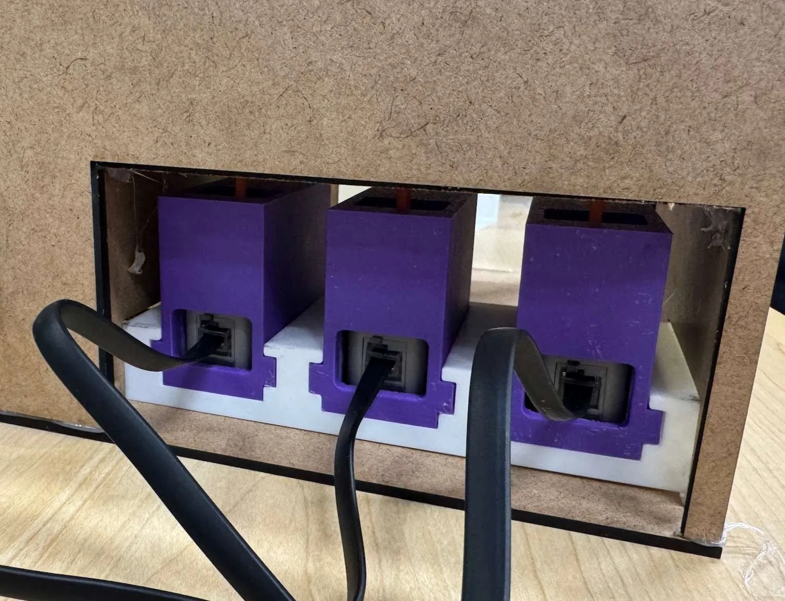
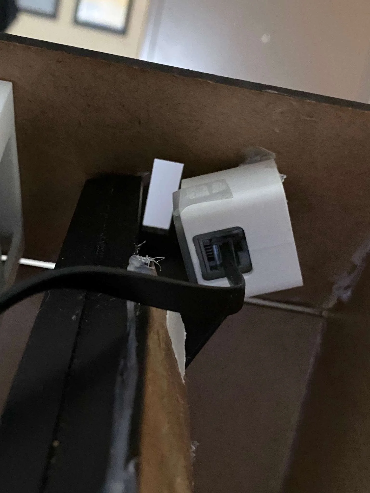

Stash&Store automated coin ATM
An automated coin management system that accepts, identifies, stores and dispenses coins for any number of users, built from VEX IQ components, 3D-printed mechanisms and a laser-cut case.
- Course
- ME 101, University of Waterloo
- Timeframe
- Sep 2025 to Apr 2026
- Focus
- Mechanism design, sensing, C++ control
- Tools
- SOLIDWORKS, C++, 3D printing, laser cutting
Overview
Stash&Store works like a small ATM for coins. A user authenticates, deposits coins that the machine identifies and sorts into storage, and later withdraws them. It integrates mechanical storage and dispensing with VEX motors, optical and inertial sensing, and a user interface on one controller.



My contribution
Across the project I designed, manufactured and programmed parts of the machine:
- Designed the casing, the coin sorting and dispensing mechanisms, and the mounts for the motors and optical sensors.
- Designed the kinematic coin-pushing mechanism (crank shaft, piston arm and coin pusher) and iterated on it until it stopped jamming and handled different coin sizes reliably.
- Built parts by 3D printing, laser cutting and manual fabrication.
- Integrated the VEX motors, optical and inertial sensing in C++ using modular software with centralized state management.
The control code is on GitHub: m2eyre/ME101-ATM.
Team size and how the work was split, so recruiters can see which parts were yours alone.
Constraints
- Mechanical storage and dispensing had to work within the limits of the VEX IQ platform.
- Optical sensor readings vary from coin to coin, so recognition had to tolerate noise.
- Mechanical tolerances on printed parts affect whether coins feed cleanly or jam.
- The system had to stay responsive and handle faults, including tampering.
Mechanism design
Each coin size has its own storage tube above a pusher. A motor below drives a crank shaft, which moves a piston arm and slides the coin pusher under the stack to eject one coin at a time. The motor housing sits directly beneath the pusher base.






The motors and optical sensors sit in custom printed mounts that locate them against the case and keep cables clear.




Design alternatives you tried for the pusher before settling on the crank and piston arm, and what caused the jams you fixed.
Testing and results
- Demonstrated automated deposit, storage, withdrawal and user authentication.
- Added tamper detection using the inertial sensor.
- Modular software with centralized state management made debugging and system control simpler.
How accuracy and detection were measured (number of trials, coin types).
Takeaways
Stash&Store brought mechanical components, sensors, actuators, software and user interaction together in one working prototype. The hardest problems were at the boundaries between them: reliable coin recognition despite sensor variation, and storage and dispensing inside the VEX IQ platform's limits.
A lesson learned in your own words.